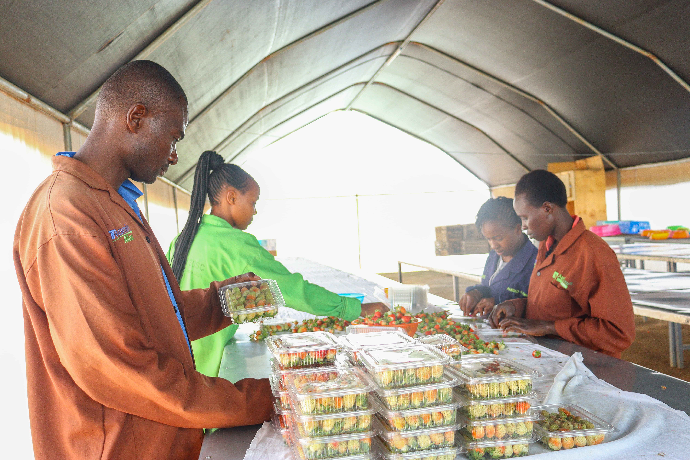
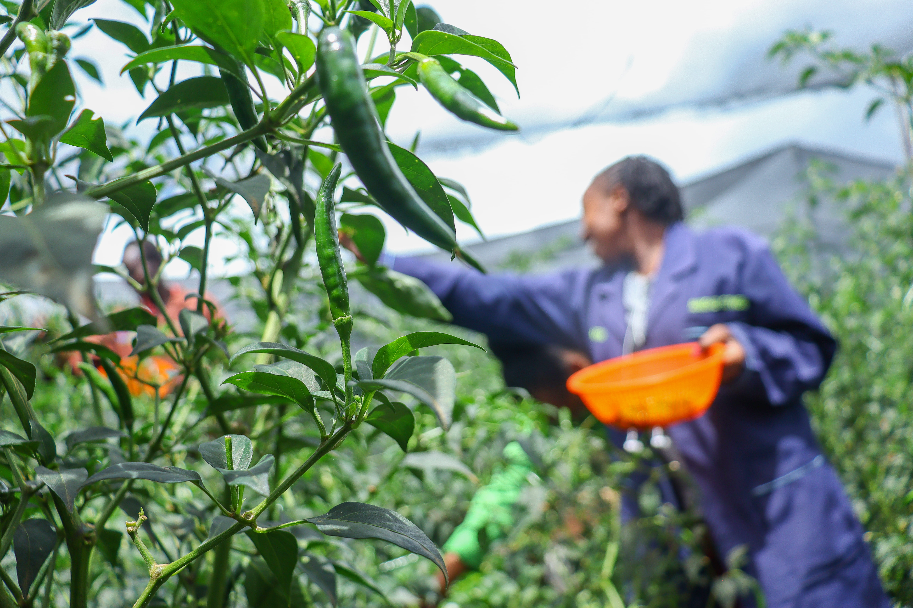
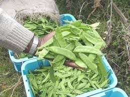
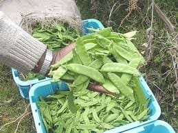
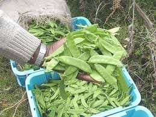
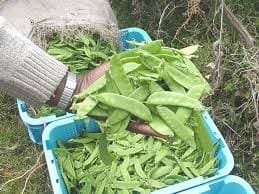

Explore Our Farm


 


At Public Choice Investment (PCI), we bridge the gap between Kenyan farmers and global markets with a mission rooted in quality, sustainability, and transparency. Our strategic approach ensures smallholder farmers benefit from fair pricing, market access, and modern agricultural practices. PCI emphasizes compliance with international export standards, including GLOBALG.A.P., Euro-Retailer Produce Working Group (EUREPGAP), and phytosanitary regulations.
Our team’s experience in agriculture, export logistics, and international trade positions us as a reliable partner. We provide training, certification guidance, and access to agro-inputs and post-harvest handling tools. By partnering with PCI, buyers gain traceable, fresh, and high-quality produce. Farmers enjoy financial empowerment and international exposure.
PCI’s investments in smart farming, AI-driven insights, and cold-chain infrastructure minimize losses, boost efficiency, and maximize value. Choose PCI for ethical, scalable, and impactful export solutions rooted in Kenya’s fertile soil and passionate farmers.

Read stories, export insights, and updates from our farm and global market activities.
Go to Blog